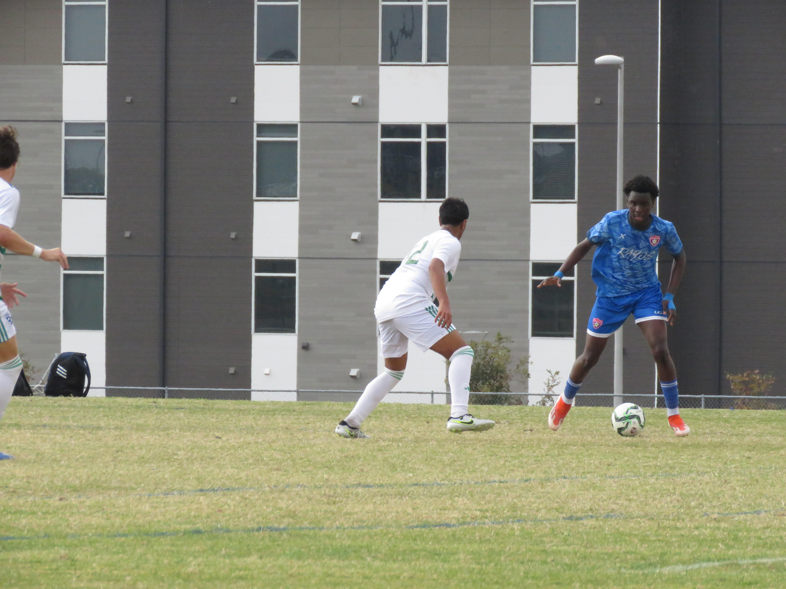

Soccer has always been more than just a game for me—it’s a platform where I’ve developed critical skills like teamwork, leadership, and perseverance. My versatility on the pitch allowed me to excel in multiple positions, including CAM (Central Attacking Midfielder), LW (Left Winger), and ST (Striker). I was particularly valued for my ability to use both legs effectively, which gave me an edge in precision and adaptability. Coupled with my exceptional speed, I became a key player who could adapt to various situations and contribute to the team’s success in dynamic ways.
My love for sports extended beyond soccer to track and field, where I pushed my limits across various events. I competed in the 100m, 200m, 400m, 4x100m relay, 4x400m relay, 800m, 1800m, and long jump, earning medals in each event. These experiences taught me discipline, time management, and how to perform under pressure. The physical endurance and mental resilience required for track events complemented the skills I cultivated on the soccer field, creating a well-rounded athletic foundation.
Through these experiences, I have learned the value of hard work, adaptability, and striving for excellence. Whether it’s breaking through defensive lines in soccer or sprinting to the finish line on the track, I approach every challenge with determination and a drive to improve. These qualities not only define my athletic journey but also shape my approach to academics and other areas of my life..
When I’m not immersed in my studies or engaging in sports, you’ll likely find me in the kitchen, where my passion for cooking truly shines. Cooking is more than just a hobby—it’s a creative outlet that allows me to explore the endless possibilities of flavors, textures, and techniques. My journey into the culinary world began out of necessity and curiosity, as I often found myself at home with my younger sister. Taking on the responsibility of preparing meals for us sparked my initial interest in cooking, and I quickly turned to YouTube tutorials and other online resources to teach myself the basics.
Watching my mom cook whenever she had the opportunity also became a major influence. Her ability to create delicious meals effortlessly inspired me to try my hand at the art of cooking. I absorbed her techniques and infused them with my own experimental style, blending traditional methods with innovative ideas. Over time, cooking evolved from being a practical skill to a deeply rewarding passion that I continue to nurture.
Cooking now serves as both a form of relaxation and a way to express myself creatively. I enjoy experimenting with new recipes, combining unexpected ingredients, and perfecting traditional dishes. Each meal I prepare is an opportunity to connect with my Nigerian heritage, explore cuisines from around the world, and share my creations with others. Beyond personal enjoyment, cooking has become a way for me to bond with family and friends, creating lasting memories over shared meals.
Through this journey, I’ve learned the importance of adaptability, patience, and attention to detail. Whether it’s crafting a simple comfort meal or attempting a complex recipe, cooking reminds me of the value of perseverance and the joy of creating something meaningful. It’s a skill that not only sustains but enriches my life in countless ways.
Music has always been a significant part of my life, a passion I inherited from my father, who played the guitar and sang in a Christian band called “The Footsteps.” His influence was instrumental in sparking my early interest in music, and I began learning the piano, drums, and guitar at a young age. These instruments became an integral part of my upbringing and have remained a constant source of joy and inspiration.
For me, music is more than just a skill; it’s a creative outlet that allows me to express myself and connect with others. It has taught me patience, discipline, and the value of persistence—qualities that extend into other areas of my life. Each instrument offers a unique experience: the piano brings precision and elegance, the drums embody rhythm and energy, and the guitar provides melodic versatility.
Balancing my musical pursuits with a busy academic and extracurricular schedule, I find music to be both grounding and uplifting. Whether performing, experimenting with new styles, or simply reflecting on the legacy of my father’s passion, music remains a cornerstone of my identity and a testament to the lasting influence of family and creativity.